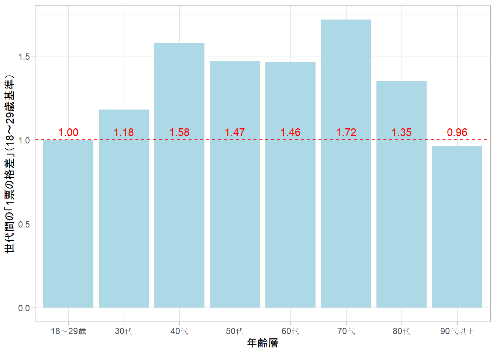

パッケージのローディングなど
library(tidyverse)
library(fs)
library(arrow)
library(readxl)
library(jpstat)
theme_set(theme_light())
dir_create("quantify-vote-disparity-between-generations")2023年4月23日
ちょうど選挙シーズンですので1，オープンデータを使って，しばしば問題になる「1票の格差」を定量化してみたいと思います．
「1票の格差」は，通常，議員1人あたりの有権者数が地域（選挙区）によって異なる（≒議員1人を当選させるために必要な票数が地域によって異なる）ことを指します．たとえば，2022年の参議院選挙では，「1票の格差」が最大で3.03倍であったとされています2．
現在，日本の都市部と地方は以下の表のような関係にあるとされ，「1票の格差」が「地方で新幹線が整備される一方で東京の通勤ラッシュが解消されない」といった経済効率性の低下などを引き起こすことが問題視されています3．
| 地域 | お金の流れ（地方交付税など） | 政治的平等（「1票の格差」） |
|---|---|---|
| 都市部 | 地方にお金を「支払う」 | 「1票の価値」が軽く 都市部「冷遇」 |
| 地方 | 都市部からお金を「受け取る」 | 「1票の価値」が重く 地方「優遇」 |
一方で，今後，東京一極集中などにより地方の社会課題が一層深刻になることが予想されます．そのため，「1票の価値」を完全に等しくすれば，むしろ地方の「冷遇」につながるといった懸念もあります．
このように，「1票の格差」の是正は，決して簡単な道のりとはいえませんが，引き続き是正に向けた取り組みを進めていく必要があるといえるでしょう．
ここまで紹介した地域間の「1票の格差」に加えて，世代間にも「1票の格差」が存在するといわれています4．これは，少子高齢化により，若年層の有権者数に対して高齢者層の有権者数が多くなることにより引き起こされるものです5．
さきほど示した都市・地方部の関係と同様に，若年層と高齢者層は，以下の表のような関係にあると考えられます．地方における人口減少・人手不足が深刻となった最近になってようやく，国は，少子化対策を国の最重要課題に位置づけましたが，これまで，こうした若年層向けの政策が十分に行われなかった6のは世代間の「1票の格差」の影響によるものかもしれません．
| 世代 | お金の流れ（社会保障費など） | 政治的平等（「1票の格差」） |
|---|---|---|
| 若年層 | 高齢者層にお金を「支払う」 | 「1票の価値」が軽く 若年層「冷遇」 |
| 高齢者層 | 若年層からお金を「受け取る」 | 「1票の価値」が重く 高齢者層「優遇」 |
地域間の「1票の格差」は，（都市部基準で）約〇倍といった定量化がなされることが一般的ですが，世代間の「1票の格差」については，これまで，あまり定量化されていないようです．
単純な定量化の方法としては，年齢層別の人口を何らかの基準人口で割るといったものが考えられますが，このような方法では，加齢により亡くなる方がいることが考慮されず，「人口が少ないので100歳以上の1票の価値が軽い」といった評価をすることになってしまいます．
そこで，2020年国勢調査人口と2020年生命表を用いて，世代間の「1票の格差」を定量化してみようと思います．生命表とは，「ある期間における死亡状況が今後変化しないとの仮定のもとで各年齢の者が1年以内に死亡する確率などの指標を表したもの」です7．
以下で示す世代間の「1票の格差」は，あくまで，オープンデータに基づく簡易的な試算であることにご注意ください．
今回は，以下の表に示すデータを使用します．ここで，表中の定常人口（nLx）とは，「一定の出生・（生命表上の）死亡率のもとで得られる年齢階級別人口」のことです8．
データ入手・整形方法については，下に折りたたまれているコードも参考にしてください．
| 内容 | 出典 | 入手方法 |
|---|---|---|
| 男女・年齢別人口 | 2020年国勢調査 | jpstatパッケージで e-Stat APIを使用 |
| 男女・年齢別定常人口（nLx） | 2020年生命表 | URLからエクセルファイルを ダウンロード |
# jpstatパッケージを使って2020年国勢調査データをダウンロードしています
if (!file_exists("quantify-vote-disparity-between-generations/pop_2020.parquet")) {
# 注意: jpstatパッケージはe-Stat APIを利用するためAPIキーが必要です
census_2020 <- estat(keyring::key_get("estat-api"),
"https://www.e-stat.go.jp/dbview?sid=0003445139")
pop_2020 <- census_2020 |>
activate(tab) |>
select() |>
activate(cat01) |>
filter(name == "うち日本人") |>
select() |>
activate(cat02) |>
rekey("sex") |>
filter(name %in% c("男", "女")) |>
select(name) |>
activate(cat03) |>
rekey("age") |>
select(name) |>
activate(area) |>
filter(name == "全国") |>
select() |>
activate(time) |>
select() |>
collect(n = "pop")
pop_2020 <- pop_2020 |>
filter(str_detect(age_name, "^\\d+歳$") | age_name == "100歳以上") |>
mutate(sex = as_factor(sex_name),
age = case_when(str_detect(age_name, "^\\d+歳$") ~ age_name |>
str_extract("\\d+"),
age_name == "100歳以上" ~ "100--Inf") |>
as_factor(),
pop = parse_number(pop),
.keep = "unused") |>
relocate(sex, age, pop)
write_parquet(pop_2020, "quantify-vote-disparity-between-generations/pop_2020.parquet")
}# 第23回生命表（男）
file_lifetable_male_2020 <- "quantify-vote-disparity-between-generations/lifetable_male_2020.xlsx"
if (!file_exists(file_lifetable_male_2020)) {
curl::curl_download("https://www.e-stat.go.jp/stat-search/file-download?statInfId=000032173232&fileKind=0", file_lifetable_male_2020)
}
# 第23回生命表（女）
file_lifetable_female_2020 <- "quantify-vote-disparity-between-generations/lifetable_female_2020.xlsx"
if (!file_exists(file_lifetable_female_2020)) {
curl::curl_download("https://www.e-stat.go.jp/stat-search/file-download?statInfId=000032173233&fileKind=0", file_lifetable_female_2020)
}col_names_lifetable <- read_excel(file_lifetable_male_2020,
range = "B3:J5",
col_names = as.character(1:9)) |>
t() |>
as_tibble(.name_repair = \(x) c("col_name_1", "col_name_2", "col_name_3")) |>
unite("col_name", starts_with("col_name"),
na.rm = TRUE) |>
mutate(col_name = col_name |>
str_remove_all("\\s")) |>
pull(col_name)
range_lifetable <- "B6:J127"
lifetable_male_2020 <- read_excel(file_lifetable_male_2020,
range = range_lifetable,
col_names = col_names_lifetable)
lifetable_female_2020 <- read_excel(file_lifetable_female_2020,
range = range_lifetable,
col_names = col_names_lifetable)
static_pop_2020 <- list(男 = lifetable_male_2020,
女 = lifetable_female_2020) |>
bind_rows(.id = "sex") |>
rename(age = 年齢_x,
static_pop = 定常人口_nLx_人) |>
select(sex, age, static_pop) |>
filter(str_ends(age, "年")) |>
mutate(sex = as_factor(sex),
age = age |>
str_extract("^\\d+") |>
parse_integer(),
# 100歳以上はまとめる
age = if_else(age >= 100,
"100--Inf",
as.character(age)) |>
as_factor()) |>
summarise(static_pop = sum(static_pop),
.by = c(sex, age))
write_parquet(static_pop_2020, "quantify-vote-disparity-between-generations/static_pop_2020.parquet")入手・整形したデータを使って人口ピラミッドを作成してみましょう．以下のグラフは，2020年国勢調査の人口に生命表の定常人口（赤線）を重ねたものです9．ただし，定常人口は，0歳定常人口が2020年国勢調査の0歳人口と等しくなるように基準化しています10．また，100歳以上の人口・定常人口については，100歳に集計して表示しています．
# 100歳以上を数値100で置き換える
as_integer_age <- function(age) {
if_else(age == "100--Inf",
100,
parse_integer(as.character(age),
na = "100--Inf"))
}
pop_2020 <- read_parquet("quantify-vote-disparity-between-generations/pop_2020.parquet") |>
mutate(age = as_integer_age(age))
static_pop_2020 <- read_parquet("quantify-vote-disparity-between-generations/static_pop_2020.parquet") |>
mutate(age = as_integer_age(age))
ratio_pop_static_pop <- static_pop_2020 |>
filter(age == 0) |>
select(!age) |>
left_join(pop_2020 |>
filter(age == 0) |>
select(!age),
by = join_by(sex)) |>
mutate(ratio_pop_static_pop = pop / static_pop,
.keep = "unused")
static_pop_2020 <- static_pop_2020 |>
left_join(ratio_pop_static_pop,
by = join_by(sex)) |>
mutate(pop = static_pop * ratio_pop_static_pop,
.keep = "unused")
pop_2020 |>
mutate(pop = if_else(sex == "男",
-pop,
pop)) |>
ggplot(aes(age, pop,
fill = sex)) +
geom_col() +
geom_line(data = static_pop_2020 |>
mutate(pop = if_else(sex == "男",
-pop,
pop)),
aes(group = sex,
color = "定常人口\n（参考値）")) +
scale_x_continuous("年齢",
breaks = seq(0, 100, 10)) +
scale_y_continuous("人口［千人］",
labels = \(x) {
scales::label_comma(scale = 1e-3)(abs(x))
}) +
scale_fill_manual("性別",
values = c(男 = "cornflowerblue",
女 = "lightcoral")) +
scale_color_manual(NULL,
values = c(`定常人口\n（参考値）` = "red")) +
coord_flip() +
guides(fill = guide_legend(order = 1),
color = guide_legend(order = 2))2020年の人口ピラミッドより，70歳前半および40歳後半において人口のピークがあることがわかります．これらは，それぞれ「団塊世代」「団塊ジュニア」と呼ばれる世代にあたります11．一方で，若年層の人口は，「団塊世代」「団塊ジュニア」の人口を大きく下回っていることがわかり，近年の少子化の深刻さがみてとれます．
赤線の定常人口（参考値）に対する国勢調査人口の比を用いて，世代間の「1票の格差」を定量化してみましょう．
以下のグラフは，選挙権を有する18歳以上を対象に，おおよそ10歳間隔で世代間の「1票の格差」を定量化したものです．ただし，ここでは18～29歳の「1票の価値」を1として基準化しています．
グラフより，40代～60代の1票は，18～29歳の約1.5倍，70代の1票は，18～29歳の約1.7倍の価値を有するという試算が得られました．また，（生命表の性質によるものかもしれませんが）「団塊世代」「団塊ジュニア」ではない30代や80代以上の1票の価値は，40代～60代・70代と比べると低くなっていることがわかりました．
vote_disparity <- pop_2020 |>
left_join(static_pop_2020 |>
rename(static_pop = pop),
by = join_by(sex, age)) |>
filter(age >= 18) |>
mutate(ageclass = case_when(between(age, 18, 29) ~ "18～29歳",
between(age, 30, 39) ~ "30代",
between(age, 40, 49) ~ "40代",
between(age, 50, 59) ~ "50代",
between(age, 60, 69) ~ "60代",
between(age, 70, 79) ~ "70代",
between(age, 80, 89) ~ "80代",
90 <= age ~ "90代以上")) |>
summarise(across(c(pop, static_pop),
sum),
.by = ageclass) |>
mutate(vote_disparity = pop / static_pop,
.keep = "unused")
vote_disparity <- vote_disparity |>
bind_cols(vote_disparity |>
filter(ageclass == "18～29歳") |>
select(!ageclass) |>
rename(vote_disparity_18to29 = vote_disparity)) |>
mutate(vote_disparity = vote_disparity / vote_disparity_18to29,
.keep = "unused")
plot_vote_disparity <- vote_disparity |>
ggplot(aes(ageclass, vote_disparity)) +
geom_col(fill = "lightblue") +
geom_text(aes(label = scales::label_comma(accuracy = 1e-2)(vote_disparity)),
y = 1,
vjust = -0.5,
color = "red") +
geom_hline(yintercept = 1,
color = "red",
linetype = "dashed") +
scale_x_discrete("年齢層") +
scale_y_continuous("世代間の「1票の格差」（18～29歳基準）")
ggsave("quantify-vote-disparity-between-generations/plot_vote_disparity.png",
plot = plot_vote_disparity)
plot_vote_disparity
オープンデータである国勢調査と生命表を用いて，世代間の「1票の格差」を定量化してみました．
実は，若者の投票率の低さも世代間の「1票の格差」の大きな要因となっているといわれています．今後は，世代間の「1票の格差」に対する議論を深めつつ，若者の投票率が上がるような魅力的な政策を多く打ち出していくことが必要であると考えられます．
地方公共団体の議員・長を決める第20回統一地方選挙が，2023年4月9日（日）と2023年4月23日（日）に行われました．↩︎
こういった考え方は，東京一極集中に伴う都市部への人口集積のもとで，「1票の価値」を完全に等しくすれば，むしろ地方「冷遇」につながるといった考え方とも類似します．↩︎
赤線で示した定常人口（参考値）は，2020年の0歳の男女が，死亡率一定の仮定のもとで，ある年齢で何人生存しているかを表しています．↩︎
0歳人口の男女比は，おおよそ105：100となっています．↩︎